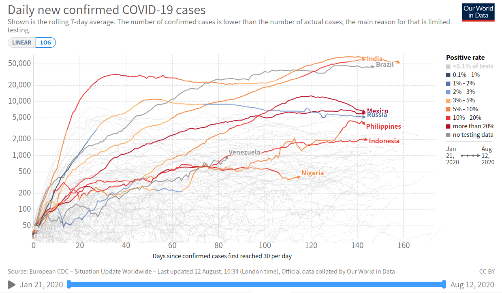
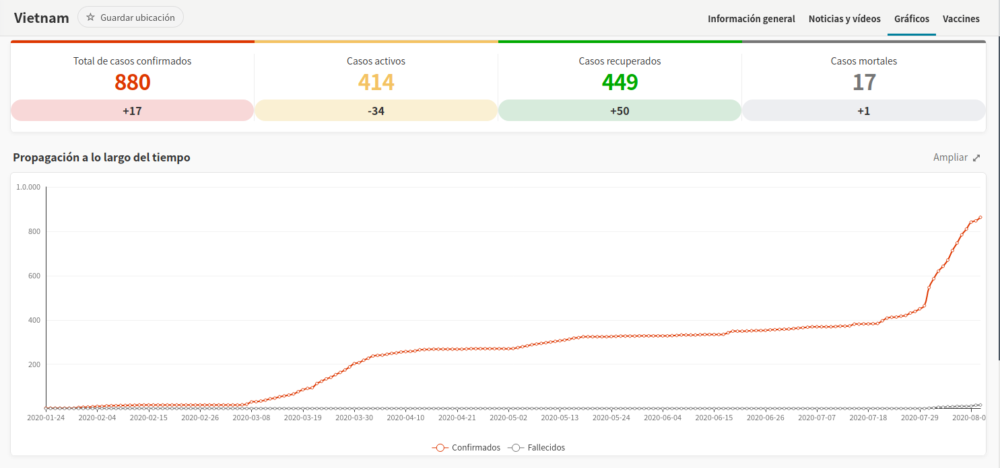
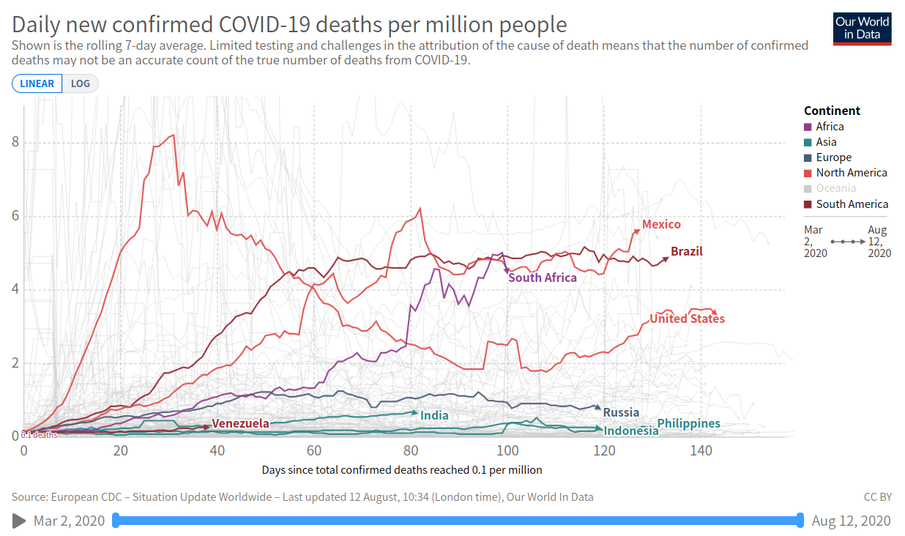
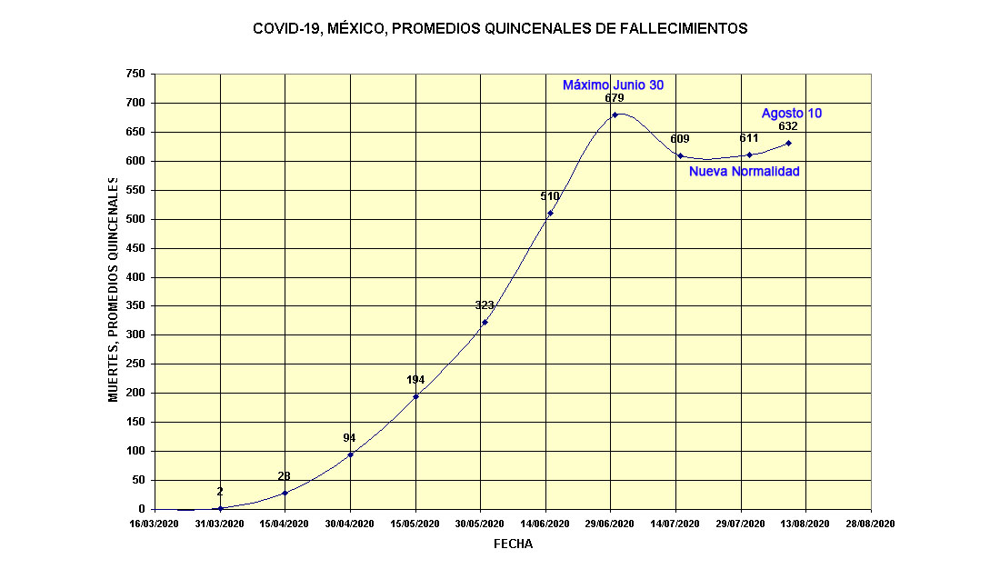
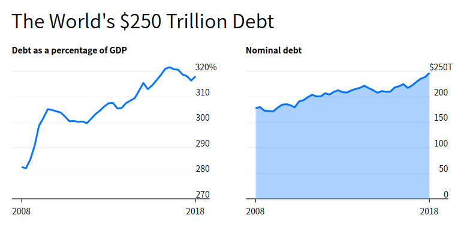
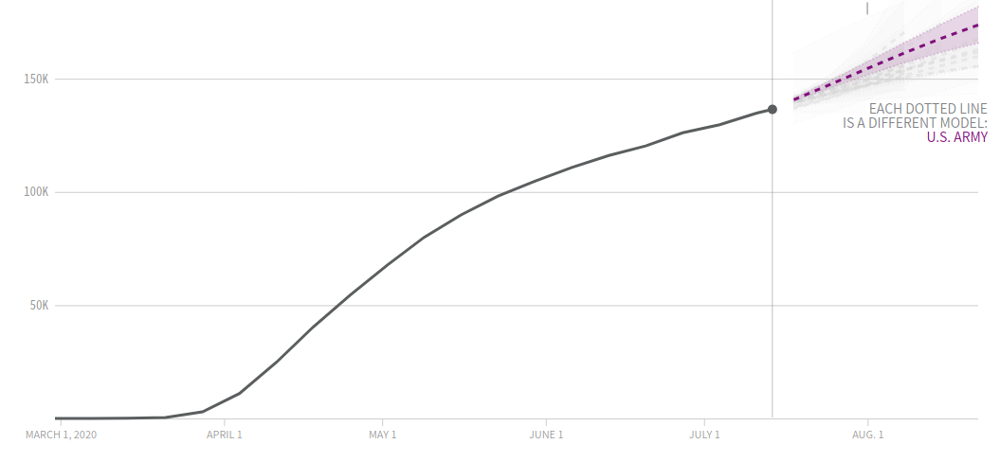
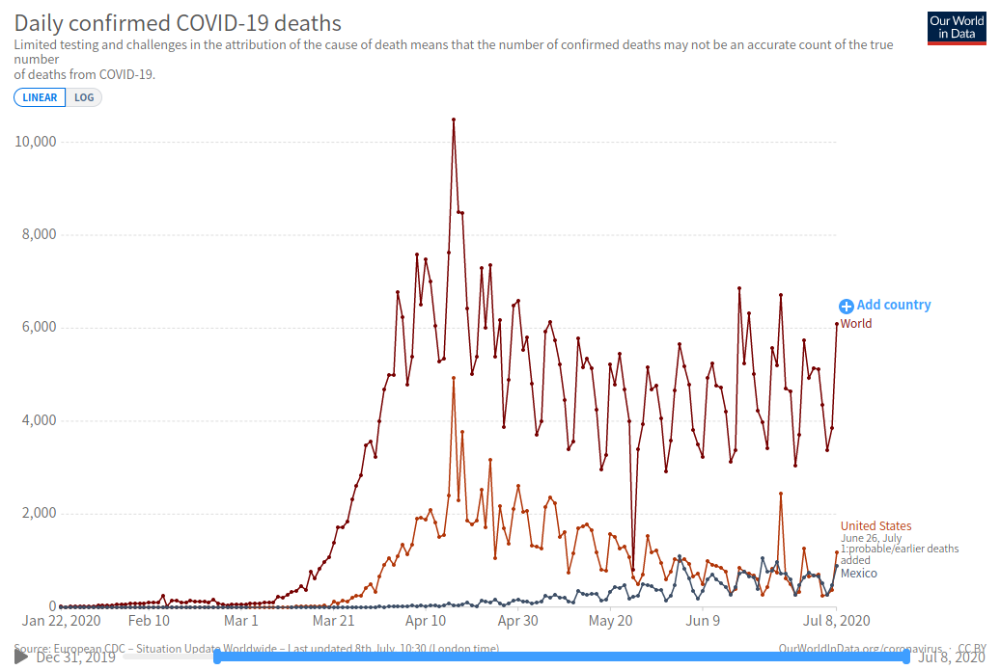
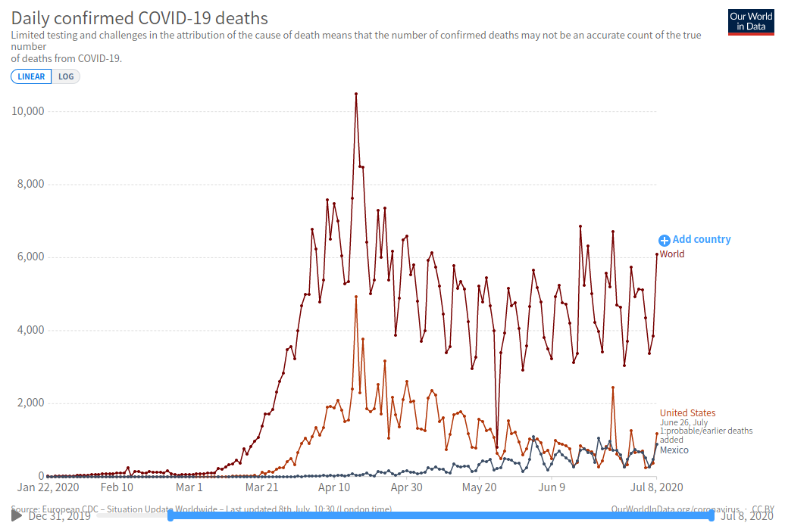
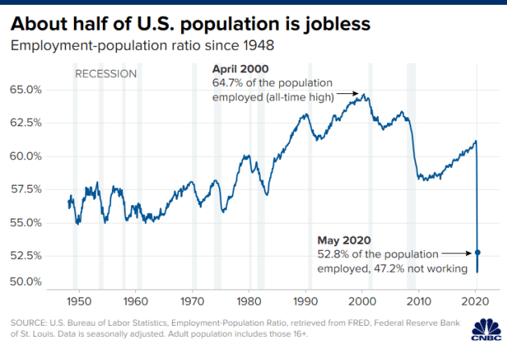
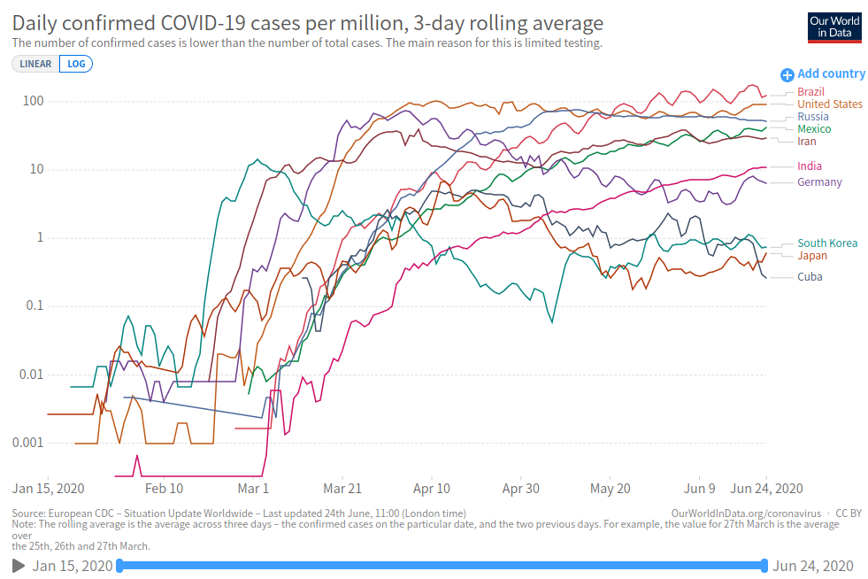

13. Prelude to the Second Civil War.
2.septiembre.2020Unos artículos recientes de Thierry Meyssan (Parte 1 y Parte 2) me han llevado a reflexionar sobre la comprensión que se puede o no tener de la psicología profunda de los pueblos. Sería falaz afirmar que el contacto directo con lxs representantes contemporánexs de un pueblo es suficiente para entender a ese pueblo, como también sería falaz afirmar que basta con el estudio de su historia. Ambos acercamientos son esenciales. Pero, y en esto es en lo que me quiero distinguir de otrxs que han meditado sobre estas cuestiones, lo que está generalmente ausente en sus análisis es una perspectiva de clase.
No es lo mismo estudiar la historia de un pueblo que la historia de la clase detentadora del poder de un pueblo. No es lo mismo el contacto directo con el proletariado y el lumpenproletariado de un pueblo que el contacto directo con su pequeña o gran burguesía o con su "diáspora".
Una de las principales diferencias entre mi generación y las anteriores es que mi generación ha tenido la posibilidad de establecer un contacto directo, íntimo y permanente a través de la red con personas de otros pueblos. Yo he crecido discutiendo, un día si y otro también, con proletarixs estadounidenses, la mayoría de los cuales son, consciente o inconscientemente, liberales o fascistas (poca diferencia).
Hablando sobre quienes viajan a otros países, Meyssan apunta:
¿Se lanzará el viajero hacia lo desconocido y tratará de relacionarse realmente con las personas del país? Y, si llegara a hacerlo, ¿le hablarían esas personas libremente, confiarían sus logros, sus sueños y angustias a un rico viajero?
Evidentemente la respuesta es no. Pero en la red, en los viejos foros de mensajes, en los chats, en las comunidades en torno a fandoms y videojuegos y en otros recovecos más o menos obscuros no solo se "comparten" libremente logros, sueños y angustias. Se utilizan como armas. Un pequeñoburgués gringo alardeará hasta la saciedad de su sueldo de cincuenta mil dólares al año frente a personas de otros países que realizan el mismo trabajo por cinco o diez veces menos dinero. Una proletaria gringa, más discreta, grabará un tutorial de maquillaje utilizando casualmente productos que cuestan dos o tres meses el sueldo de una proletaria mexicana o argentina o chilena. Lo harán, consciente o inconscientemente, para reafirmarse en una noción superioridad en relación con otras personas pero sobre todo en relación con los otros pueblos. Crearán memes sobre first world problems. La mitad de ellxs hablará abiertamente de lo mucho que odia a niggers, chinks y wetbacks. Harán chistes diariamente sobre invadir países y matar millones de personas al mismo tiempo que rehusarán siquiera enterarse de lo que sucede en Yemen, Libia, Siria o Palestina.
Nosotrxs, mi generación y las personas de otras generaciones que se han adaptado a la red, estamos en permanente confrontación no con seres despreciables e imbéciles como un Mike Pompeo sino con seres aún más despreciables e imbéciles, la gente común. Gente capaz de soltar cuatro o cinco insultos racistas (y ningún pensamiento coherente) entre una fumada y otra de meta. El problema de "Estados Unidos" no es el deep state, el complejo militar-industrial, el lobby zionista, ni los demócratas o republicanos. El problema es el pueblo.
Dice Meyssan:
Tenemos que saber que es imposible entender a un pueblo sin conocer su historia, no sus últimos 10 años, sino a lo largo de milenios.
Lo que es totalmente cierto respecto a la gran mayoría de pueblos del mundo. Pero que no aplica respecto al pueblo estadounidense, con apenas poco más de trescientos años de historia. Desde el arribo de colonxs genocidas a las costas de Virginia y Plymouth hasta el make america great again de Donald Trump la historia de este pueblo se puede resumir en la búsqueda de la supremacía. Y esta búsqueda no es algo exclusivo de la clase detentadora del poder.
Pero mucho más importante que entender la psicología de lxs supremacistas es entender la psicología de quienes luchan contra el supremacismo, contra el gobierno, el estado y la idea misma de "América". La nación negra, las naciones indígenas, las organizaciones marxistas-leninistas, socialistas y anarcocomunistas en el corazón de la bestia. Todo lo que es invisible e irrelevante para lxs analistas que se gradúan de centros de desinformación como Harvard y que piensan que son las élites y no los pueblos quienes hacen la historia. En un interesante artículo de Ren Yi, traducido y publicado por el colectivo Qiao, leemos (traducción propia):
Sin embargo, ¿hemos visto a algún manifestante protestar contra la estructura del sistema político, las instituciones y el gobierno de Estados Unidos? ¿Habrá alguna persona que venga y queme la Constitución? ¿Queme la bandera americana? ¿Habrá alguna persona que proponga planes concretos de acciones hacia la subversión? No hubo ninguno. Los manifestantes sólo podían protestar por unas pocas "condiciones". Cada camino hacia la resolución se desvía de nuevo hacia las elecciones.
Yo sí lxs veo, tanto personajes anónimos como célebres. Por supuesto, son minoritarios. Pero lxs supremacistas capaces de acciones reales son también minoritarios. También lxs veo. Las personas que no están dispuestas a jugarse la vida y a tomar las armas, la mayoría social, es irrelevante. El destino de "Estados Unidos" lo decidirán los grupos radicales y minoritarios en una confrontación violenta y no se puede afirmar con seguridad que el ejército de "Estados Unidos" tomará claro partido por el bando supremacista; no hay cohesión ideológica a nivel de tropa y entre veteranxs tirados sin más a la pila de deshechos y quienes son racializadxs no-blancxs hay profundos resentimientos.
Antifa no es simplemente un proyecto de Soros. Black Lives Matter no es simplemente un grupo de choque mercenario al servicio del partido demócrata. En realidad, hace ya varios meses que los supuestos controladores han perdido el control de estos movimientos. Ni Antifa ni BLM son organizaciones definidas, no son partidos. Son la gente cuyos intereses de clase difieren del interés de clase que protege la policía, fundamentalmente la protección de la propiedad privada. Son la gente que no tiene nada que perder y un mundo que ganar. Y serán cada vez más y menos manipulables.
Ren Yi también dice:
Creo que no habrá una insurrección en los EE.UU. porque no hay poder en los EE.UU. que pueda derribar o transformar al sistema americano. El sistema americano es demasiado poderoso, ya puede cambiar el significado de las palabras: convertir la "revolución" en reformas encerradas en los límites del sistema electoral [...] Sólo una enorme presión externa puede hacer que los Estados Unidos cambien [...]
El concepto americano de carácter nacional es su propio sistema y valor político. Nada menos que una severa frustración del sistema americano, quizás por el hecho de que China alcance o supere ampliamente a los Estados Unidos [podría cambiarlo]
Tiene razón con respecto a que el ascenso de China durante las próximas décadas puede provocar cambios importantes dentro de "Estados Unidos", pero me parece que se equivoca con respecto a que no habrá insurrección. Para mi ya es evidente que "Estados Unidos" se dirige hacia una guerra civil. Esta guerra civil puede ser más bien una masacre que una guerra. Las fuerzas del fascismo están mucho más organizadas. Pero guerra o masacre "Estados Unidos" cambiará; el mundo entero cambiará. Los próximos meses serán definitorios. Trump se está recuperando en lo electoral y pienso que es más probable que gane a que pierda las próximas elecciones. La posibilidad de que no se celebren las elecciones en noviembre y de fraude a través de mail in ballots sigue presente. Pienso que un triunfo de Biden no sería suficiente para desactivar la mobilización en las calles que se alimenta de cada acto de racismo institucional, cada asesinato impune a manos de una policía que no puede dejar de matar gente de un día para otro, incluso si recibieran la instrucción expresa de dejar de hacerlo.
Cambiando de tema, la semana pasada mencioné que "resulta particularmente interesante que India, China y Pakistán vayan a participar en ejercicios militares de la Organización de Cooperación de Shangai que tendrán lugar en Rusia a pesar de las recientes fricciones que han habido". Lamentablemente, las cosas han cambiado y la India no participará. Tomo esto es una señal de que India se estará distanciando del bloque euroasiático liderado por Rusia-China.
Otro dato interesante es el contraste entre las protestas alemanas en contra del confinamiento por Covid y las últimas protestas contra Lukashenko en Bielorrusia. El doble de detenidxs en Alemania. Lo considero un indicador más de que el peligro de golpe en Bielorrusia está básicamente superado.
En México se están dando algunos cambios. La salida de Víctor Toledo de la SEMARNAT, el recrudecimiento de los ataques paramilitares contra los pueblos bases de apoyo del EZLN y la entrega de la presidencia de la cámara de diputados a la bestia priista, en un acto de burda traición al PT, son claras muestras de la completa descomposición del pseudopartido Morena y del proyecto de la "4T".
11. Tensiones.
19.agosto.2020Hace tan solo unos días se anunciaba con gran alharaca un "histórico" acuerdo entre Emiratos Áŕabes Unidos y la entidad sionista que contemplaba entre sus puntos clave la suspensión de la continuada invasión y anexión de territorios palestinos en Cisjordania. Prácticamente al día siguiente Netanyahu clarificó que continuaría la anexión de territorios. El acuerdo fue inmediatamente denunciado por el pueblo palestino y Hamas respondió con globos incendiarios, a lo que "Israel" respondió con bombardeos. Hoy es el séptimo día consecutivo de bombardeos sobre Gaza. El acuerdo ha nacido muerto. Cualquier intento de sostener los términos del mismo será ridículo.
En su último discurso, Nasralá ha hecho un análisis exacto:
Lo que los Emiratos han hecho es un favor electoral, político y personal al Presidente Trump, para que pueda beneficiarse de este durante las (próximas) elecciones. Esa es la razón de su oportunidad. (Este acuerdo de paz se logró) durante el período electoral más débil de Trump, según todas las encuestas en los Estados Unidos (que, como no sorprende, predicen que perderá las elecciones por un gran margen). Asimismo, es un favor personal y político a Netanyahu. Dentro de la entidad sionista, Netanyahu está hoy más débil que nunca desde el comienzo de su vida política: se le acusa de corrupción, espera un juicio, se organizan manifestaciones en su contra (se organizan todos los días), su gobierno está en descomposición, han habido tres elecciones y quizás haya una cuarta... Por lo tanto, necesita hacer valer algo para poder presentarse ante su pueblo -el pueblo que ocupa Palestina- como el que logró este histórico acuerdo de paz, un logro histórico, (tiene una) diplomacia excepcional, etc. Lamentablemente, tal es (la oportunidad) que (los Emiratos) proporcionan (a Trump y Netanyahu).Y debemos esperar, hasta las elecciones de los Estados Unidos, que varios (otros) países y regímenes árabes (hagan lo mismo), y estén listos y (obedientemente) esperando su turno en la cola, sólo esperando un chasquido del dedo no de Trump, sino de (su enviado especial a Oriente Medio Jared) Kushner. Tan pronto como él les haga señas, viajarán (uno tras otro) a Washington, a la Casa Blanca, y habrá varios acuerdos de paz históricos de este tipo entre ciertos regímenes árabes (e "Israel").
En el mismo discurso Narsalá afirma que de confirmarse la teoría de que "Israel" ha sido responsable de la explosión de en el puerto de Beirut, Hezbolá responderá con un ataque más devastador que la explosión. Este escenario, por si mismo, nos llevaría a una gran guerra regional si no es que a una guerra mundial.
Pero la tensión crece en todos lados. Creo que en algún momento pensé, o tal vez solo quise creer, que la pandemia de coronavirus relentizaría lo que yo ya considero la "guerra en curso". Esto no ha sucedido. Al contrario, todos los procesos que alimentan esta "guerra en curso" se están acelerando.
Hace unos días, un helicóptero apache de las fuerzas invasoras de la OTAN en Siria asesinó a un soldado del ejército sirio en un puesto de control e hirió a otros dos. Además un general ruso también fue asesinado y tres soldados rusos fueron heridos con otra bomba mientras se desplazaban cerca de Deir ez-Zor. Ayer el ejército ruso bombardeó enclaves de terroristas en Idlib, hoy el ejército turco ha invadido Siria con 450 blindados (recordemos que las fuerzas rusas están legalmente en el país en apoyo al gobierno Sirio mientras que las turcas y todas las demás fuerzas extranjeras están invadiendo ilegalmente). El "estado islámico" continua siendo un factor de desestabilización no solo en Siria sino también en Yemen, en donde Arabia Saudita utiliza terroristas takfiris como mercenarios prescindibles, obligando a las fuerzas hutíes a desviar recursos para responder a sus ataques.
"Estados Unidos"en su último acto de piratería y terrorismo de estado ha "incautado" barcos y petróleo venezolanos. Esto puede ser bastante grave para Venezuela que ya afronta escasez de combustible desde la última importación de petróleo iraní. Es la respuesta al desafío que habían lazando Venezuela e Irán hace unos meses al comenzar este comercio.
Se acaba de dar un golpe de estado en Malí. La lectura geopolítica más verosímil de esta situación es la que da Southfront:
Los acontecimientos que se están produciendo en Malí son una amenaza directa a la ya menguante influencia francesa en la región. El Ministerio de Relaciones Exteriores de Francia condenó el motín "en los términos más enérgicos" e instó a los militares de Malí a volver a los cuarteles. Más de 5.000 soldados franceses están estacionados en toda la región del Sahel, incluido Malí, como parte de una "operación antiterrorista". De hecho, este grupo militar se encarga principalmente de asegurar los intereses económicos y políticos franceses allí.Fuentes pro-francesas han estado difundiendo activamente las especulaciones de que Turquía apoyó el golpe para socavar la presencia francesa en África.
La situación en Bielorrusia continúa desarrollándose. La gente de ideología pro-occidental ha cambiado su táctica de la confrontación violenta con las fuerzas represivas del estado al estilo de las corrientes separatistas de Hong Kong a una táctica de protestas deslocalizadas no-violentas enfocadas en fábricas y empresas estatales. Esto puede ser, lamentablemente, muy efectivo. Lukashenko parece que ya entiende por completo la situación. No hay muchas opciones. Yo veo tres escenarios: 1. Bielorrusia con Lukashenko; que a mediano plazo llevaría a cambios en la constitución y un gran reacomodo de las fuerzas políticas en el interior del país pero que preservaría la independencia de Bielorrusia como esado nacional. 2. Rusia; es decir, la incorporación de Bielorrusia dentro de la federación rusa, con o sin Lukashenko. 3. Bielorrusia sin Lukashenko; que con seguridad terminaría en cuestión de unos pocos años devastada en lo económico y convertida en una punta de lanza más amenazando a Rusia.
Yo me inclino por el escenario 1. Me parece que Lukashenko no tiene más opción que la fuerza bruta para salir de la crisis tal como se ha configurado, me parece que es muy lamentable que esto sea así y que sería deseable tener más herramientas pero la fuerza puede ser suficiente para salir de la crisis. En cualquier caso, Lukashenko está haciendo todo lo que en mi opinión debería hacer: Poner a las tropas en la frontera con la UE en máxima alerta. Establecer una vigilancia sobre movimientos de tropas de la OTAN en Polonia y Lituania, que yo esperaría este ampliamente complementada por una gran operación de espionaje sobre los personajes de la oposición que están usando estos países como bases para coordinar la desestabilización en Bielorrusia. También ha identificado al "concejo" que se ha inventado la oposición como un instrumento golpista (muy similar, por cierto, a la fallida estrategia de Guaidó en Venezuela. Por otro lado Rusia continúa actuando correctamente al no contemplar reuniones con figuras de la oposición.
Las manifestaciones populares en favor de Lukashenko y del gobierno no aparecerán en los medios del capital imperialista y, por lo tanto, deben aparecer aquí. Recomiendo este hilo de twitter:
¿Qué está pasando en Bielorrusia? Los medios occidentales y las embajadas de EEUU y UE están, de nuevo, montando un Maidan. Aquí el pueblo de Bielorrusia importa poco, solo los intereses de EEUU y la UE de controlar ese país. Empezamos HILO INFORMATIVO 👇👇👇👇
— On the other side of the Berlin wall (@03690jul) August 9, 2020
Hay que buscar una cierta claridad. No perder la proporción de las cosas. Lxs mexicanxs podemos recordar el sexenio de Peña Nieto. Yo recuerdo el Zócalo aquél día de inauguración en donde se consumó el fraude que lo llevó a la presidencia. Era algo así:
En la esquina con la calle de Tacuba ocurrió una confrontación en la que los manifestantes lanzaron piedras y bombas incendiarias, mientras los agentes respondieron con gas lacrimógeno.Minutos después hubo un nuevo enfrentamiento, frente al Palacio de Bellas Artes, donde personas en su mayoría vestidas de negro comenzaron a lanzar piedras y botellas contra los elementos de seguridad, quienes se protegían con sus escudos, aunque hubo confrontaciones cuerpo a cuerpo.
La situación se volvió más caótica: mientras algunos manifestantes corrían espantados ante el avance de los granaderos, otros los confrontaban y les lanzaban piedras, en medio de las sirenas de los bancos con los cristales destrozados, los escarceos y gritos en la Alameda y una motocicleta en llamas en medio de la avenida.
La ola de destrucción se prolongó desde avenida Juárez hasta la glorieta a Colón, en Paseo de la Reforma. Pasado ese punto, los grupos que destruían fachadas de restaurantes, tiendas y cajeros automáticos se dispersaron paulatinamente, hasta que –cerca de las 14 horas– unos metros más adelante los ataques se disolvieron con la misma virulencia con que habían iniciado.
Ya cerca del Ángel de la Independencia se pudo observar a una anciana que daba ladrillos a los manifestantes para que los arrojaran, unos turistas sonrientes tomando fotos y un joven balaceándose en monociclo, mientras un indigente dormía en el suelo, totalmente ajeno a lo que pasaba a su alrededor.
Al ver la placidez de su sueño, un hombre que portaba una pancarta con la leyenda "No a Peña" apuntó con una sonrisa: "El único hombre que puede ser feliz este día es ése".
Las protestas continuaron todo el sexenio. Y si de muertes se trata frente a las tres muertes que han habido en Bielorrusia, hasta el más pequeño ejemplo nos arrojará algunxs:
Las autoridades de Hidalgo confirmaron este viernes que otras dos personas murieron en los disturbios que siguieron a las protestas por el alza de gasolina con lo que subiría a seis los muertos en los últimos días en el país en el marco del malestar generado por esta medidaLas detenciones por los saqueos y actos vandálicos en más de 300 establecimientos en distintos puntos del país llegaron al millar de personas, según las autoridades, y en estados como Veracruz se inició un refuerzo de las fuerzas de seguridad federales.
El portavoz de la fiscalía del estado de Hidalgo, Eder Arteaga, confirmó la muerte de dos hombres durante las protestas que tuvieron lugar en Ixmiquilpan, al norte de la capital, cuando manifestantes bloquearon una carretera y se enfrentaron a la policía.
En días anteriores, dos personas murieron en el puerto de Veracruz, en una de las zonas donde se dieron disturbios, otra en un municipio al sur de ese mismo estado al ser atropellado por un vehículo que trataba de huir de la policía tras unos saqueos, y un policía perdió la vida en Ciudad de México al intentar detener un robo.
¿Estuvo en algún momento en peligro de colapsar el gobierno de Peña Nieto? La realidad es que no y que las cosas podrían haberse puesto mucho peor sin que apareciera ese peligro. Por supuesto, la diferencia principal entre el caso de México durante las usurpaciones del PAN y el PRI y Bielorrusia hoy es que nunca hubo un intento del imperialismo de derrocar al gobierno de México. Pero no deja de ser clarificadora la comparación. Bielorrusia está aún bastante lejos de un nivel de inestabilidad y violencia política como el de México durante los últimos dos sexenios. Yo pienso que las protestas se disolverán en las próximas semanas.
Parte de no perder la perspectiva es también tener claro el nivel de inestabilidad política en "Estados Unidos" y tener claro que ningún país se sostiene sobre la base de la brutalidad del aparato represivo del estado al mismo grado que "Estados Unidos".
10. Notas sobre Bielorrusia y sobre Covid.
12.agosto.2020No hay salud política cuando el funcionamiento de un estado depende de una persona en específico. Pero esta es una situación común en el planeta actualmente. La gobernanza colectiva es una idea nueva para una especie que apenas emerge de unos cuatro mil años de cobro de piso autocrático y requiere de una visión compartida de la sociedad futura en la sociedad presente. Irónicamente esto se da, por ejemplo, en China y Corea popular. Tendría uno que ser muy bruto para pensar que Kim o Xi, por muy líderes supremos que sean, son indispensables para el funcionamiento del estado. Pero esto no se da en muchas democracias burguesas.
En Rusia, Putin es indispensable. Esto es así porque así lo ha decidido el pueblo ruso y así continuará mientras lo siga creyendo. El problema es la falta de alternativas. La única alternativa real a Putin es Zyuganov, que ha estado candidateándose para presidente desde hace 24 años, pero que no ha logrado convencer al pueblo ruso de desviarse de la política putinista. Pienso que el PCFR necesita una renovación generacional, pero un o una joven necesita algunos años para hacer carrera política y darse a conocer y no sobra el tiempo. De momento el estado está en manos de Putin, que es un genial estadista pero que no tiene una gran visión para Rusia a largo plazo más allá de su integración en el naciente bloque euroasiático. Una gran visión solo puede aparecer al politizar ese proyecto, como solo podría suceder con el reestablecimiento del socialismo en Rusia.
Un fenómeno similar se da ahora en México, pero a un nivel más extremo. El estado depende por completo de AMLO y no hay alternativas. Por mucho que el estado ruso dependa de Putin, en Rusia hay estructuras militares diseñadas para garantizar el funcionamiento del estado incluso en un escenario de guerra nuclear. Obviamente, no hay nada similar en México. Por mucho que Rusia Unida gire en torno a Putin, es una estructura política más o menos coherente. Nada semejante existe en México, Morena a duras penas puede considerarse un partido y rápidamente se desintegraría sin el liderazgo de AMLO. En México la única oposición es el patético ancien régime en pleno proceso de descomposición (dada la postura, intransigente diría yo, de la izquierda en México de no participar en las instituciones del estado burgués). La posibilidad real de un retorno de estos buitres, incluso a través de un golpe de estado, exige fortalecer la posición de AMLO para proteger lo que queda del estado y no permite contemplar ningún otro camino. Para acabarla de amolar AMLO no tiene interés alguno en continuar más allá de su sexenio ni las leyes mexicanas lo permitirían. Yo pienso que la postura radicalmente antireelecionista del estado mexicano nos llevará a una situación limite a fines del presente sexenio, por suerte todavía faltan varios años.
Compárese esto con Venezuela en donde el PSUV y sus aliados, por muchos errores que puedan cometer, tienen la estructura, la ideología y los cuadros para sustituir a Maduro o a cualquier funcionarix del gobierno frente a un posible atentado. En México, al contrario, si atentan contra el presidente se aborta por completo el proyecto de nación (que en lo específico existe únicamente en la mente de AMLO).
La situación actual en Bielorrusia es el escenario ideal para sopesar este tipo de consideraciones. ¿Qué pasó exactamente? Saker tiene buena información y hace un resumen bastante completo. Cabe señalar que yo no comparto del todo sus opiniones sobre el presidente Lukashenko, que sacó adelante a Bielorrusia a pesar del colapso de la URSS sin privatizar al país ni desmantelar la estructura económica socialista. No comparto tampoco su visión sobre la artificialidad de la economía bielorrusa, me parece que la apuesta por desarrollar la industria informática en la última década ha sido buena y ha funcionado bien. Pero el afán de Lukashenko por permanecer en el poder y la ausencia de alternativas reales en la política bielorrusa ha creado esta situación en donde el estado depende por completo de Lukashenko. Cada que hay elecciones el campo imperialista intenta desestabilizar al país, y ahora es cuando más cerca ha estado de lograrlo. Dice Saker (traducción mía):
Ahora parece que el servicio secreto ucraniano SBU (que no hace nada sin la aprobación del Tío Sam) montó una compleja operación encubierta para intentar que Bielorrusia y Rusia se enfrentaran. Toda la operación, incluyendo el reclutamiento, la compra de billetes de avión, etc. fue, de hecho, dirigida desde Ucrania. Este fue también el mayor error que cometieron los ucranianos: no ocultaron sus acciones lo suficientemente bien y los servicios especiales rusos tardaron menos de 24 horas en descubrir todo el plan y filtrarlo a los medios de comunicación (en ruso). Los detalles aún están siendo averiguados, pero el resultado final es este: los ucranianos pretendían ser una empresa de seguridad que buscaba hombres con experiencia probada en combate, especialmente aquellos que lucharon en el Donbass contra las fuerzas ucranianas. Una vez reclutados para algunas tareas de guardia bastante típicas, estos hombres debían ser llevados a Minsk donde perderían su avión y quedarían a la espera de la próxima oportunidad de salir de Belarús. En este punto, la SBU parece haber contactado con la KGB de Bielorrusia y "advertido" sobre los "mercenarios" rusos enviados por Rusia para matar a Lukashenko o, al menos, derrocarlo.
[...]
En este momento, lo último que escuchamos de la KGB de Bielorrusia es que impidieron el asesinato de la principal figura de la oposición, Svetlana Tikhanovskaya. Caramba, esto podría ser incluso cierto, considerando que la (despistada) Tikhanovskaya sería un perfecto "cordero de sacrificio" (y un terrible político, si alguna vez fuera elegida). Pero también parece que algunos intereses dentro de la KGB de Bielorrusia están cortejando a Tikhanovskaya. Ambas versiones son igualmente malas, creo.También es obvio ahora que la SBU quería especialmente a los rusos que tenían experiencia de combate en el Donbass para luego pedir a Bielorrusia que los entregara a Kiev. Tal demanda se hizo casi inmediatamente para la mayoría de los hombres de este grupo.
A mí me parece que Lukashenko cometió el error de pensar que Putin lo había traicionado. Putin no tiene motivos para hacer algo semejante. Él piensa a partir del interés de Rusia como estado-nación y a Rusia no le conviene perder el gran búnker que puede ser Bielorrusia frente a cualquier intento de invasión por tierra desde la Europa occidental. Putin sabe que la estabilidad de Bielorrusia depende de Lukashenko y que no hay alternativa a su figura. La junta fascista en Ucrania, al contrario, tiene todos los motivos imaginables para desestabilizar Bielorrusia y embaucar a Lukashenko. Ahora que la verdad ha salido a la luz, lo más probable es que se fortalezcan los lazos entre Rusia y Bielorrusia y que esta última se acerque más a Eurasia y se distancie de la Unión Europea. Pero a Bielorrusia no le conviene cortar lazos con la UE incluso frente a intentos de derrocar su gobierno porque a largo plazo Bielorrusia será uno de los últimos eslabones de la nueva ruta de la seda antes de llegar a Alemania, la capital de facto y centro económico de Europa. Sin embargo es posible que la UE sea quien corte lazos como "respuesta" a la reelección de Lukashenko. Esta sería una pésima decisión desde el punto de vista de la UE porque no lograría más que arrojar a Bielorrusia a "los brazos" de Rusia cuando para la UE todo el punto de derrocar el gobierno de Lukashenko es arrastrar a Bielorrusia por la fuerza de "los brazos" de Rusia. Pero sí es posible que suceda porque la UE tiende a tomar decisiones estúpidas y contrarias a sus propios intereses.
Lo que yo quería observar y que el escenario bielorruso permite observar es esto: ¿Qué pasa si en vez de tolerar agentes desestabilizadores y a sus financistas y titiriteros se les arresta brutalmente en cuestión de unos cuantos días? Yo creo que se detendrá en seco el intento de maidán bielorruso y que Lukashenko se afianzará en el poder y quedara fortalecido en el corto plazo con un país mucho más estable que, por ejemplo, Venezuela. Aunque a largo plazo su figura queda muy debilitada y hace más que urgente la búsqueda de un o una sucesora. El otro escenario, si me equivoco, es que colapse el gobierno y que Bielorrusia caiga en manos de una junta fascista como Ucrania. Yo realmente creo que a día de hoy ya se puede descartar esa posibilidad.
Nota sobre Covid:
Nos acercamos al principio del fin de la pandemia, aunque todavía faltan algunos meses. Digo principio del fin más por la llegada de las vacunas (siendo la primera la Sputnik V rusa) que por el aplanamiento de las curvas. Difícilmente se puede decir que se ha logrado tal cosa en la mayoría de los países.
Rusia ha tenido un muy buen desempeño en todos sentidos y México ha logrado revertir una peligrosa tendencia a la alza, Venezuela se empieza a acercar a territorio peligroso al llegar a mil casos diarios. Vietnam, el país con el mejor desempeño en el mundo, ha tenido recientemente un brote que ha causado las primeras muertes. El caso vietnamita puede ayudarnos a recordar como se ve una curva básicamente aplanada y a notar lo fácil que puede desaplanarse.
A pesar de que México ha "controlado" hasta cierto punto la propagación del virus, hay un grave repunte de muertes, cosa que también sucede en Estados Unidos y Sudáfrica. Sin embargo al controlar las estadísticas por millón de personas, México aparece como el país en donde la Covid es más mortal. Es muy interesante que a pesar del enorme aumento de los contagios en India, la mortalidad de la Covid en este país permanece relativamente baja, lo que habla de una población mucho más sana que la mexicana.
El caso mexicano se ve con mejor detalle en esta gráfica de México Máxico.
9. El cambio de ciclo.
05.agosto.2020Todo es cíclico y los macrociclos contienen varios microciclos. Las pandemias, por ejemplo, son cíclicas en la historia de la humanidad y entre una pandemia y la siguiente hay epidemias y brotes infecciosos. Todo esto es evidente y ampliamente conocido desde hace miles de años. La comunidad científica contemporánea no solo lo sabe sino que tiene los datos para predecir con bastante exactitud las características de los virus con más altas probabilidades de infectar humanos y generar epidemias y pandemias (el que algunos gobiernos decidan no prestar atención a la ciencia es un tema aparte).
En el campo de las sociedades humanas, de la historia social, también hay ciclos y todo parece indicar que está empezando un ciclo caracterizado por cambios que hasta un tiempo relativamente reciente yo no creía posibles, por lo menos no posibles de la manera en que se están dando.
También hay accidentes y tragedias absurdas. Aunque no tengo la seguridad de que la explosión en Beirut ayer haya sido accidental, hasta ahora las autoridades libanesas han descartado el uso de material radioactivo y no han encontrado evidencias de artefactos explosivos. Sin embargo, como bien señala Mohsen Khalif Zade, hay preguntas muy pertinentes que se deben plantear:
¿Por qué los materiales peligrosos permanecieron en El Líbano?
¿Por qué la cantidad de nitrato no salió del país?
¿Quién es el responsable que decidió guardar estos artículos sin ninguna medida de precaución?
¿Quién paga el subsidio de alquiler por almacenarlo?
¿Quién se beneficia de su permanencia en Beirut?
¿Por qué el servicio de la Inteligencia, que es responsable de proveer la seguridad en el país, no interfirió para evitar el almacenamiento de materiales explosivos en instalaciones sensibles como el puerto de la capital?
¿Cuál es el papel del comité de gestión portuaria para preservar la seguridad del puerto?
¿Quién es este juez que no ha sido persuadido por las demandas de seguridad de que estos “materiales de alto riesgo” deben ser desbloqueados? ¿Basado en qué ley ha tomado su decisión?
Líbano es un país que se ha mantenido a flote en la últimas décadas como por sortilegio y que ya se encontraba en una situación política muy complicada antes de la catástrofe. Independientemente de las causas de la explosión, esta situación va a tener efectos geopolíticos importantes, exacerbando la tensión entre Irán e Israel. La responsabilidad principal de la seguridad de Líbano y de la región va a recaer fundamentalmente en Hezbolá. Confío en la capacidad de Nasralá y en la fortaleza del milenario pueblo libanés. Beirut me duele personalmente, desde que tengo memoria he soñado con recorrer sus calles. Lo más probable es que nunca tenga suficiente dinero para llegar pero hoy mi corazón ya está ahí.
No obstante, el nuevo ciclo del que hablaba trae consigo situaciones inéditas y positivas.
Recuerdo mi tristeza en 2016 al ver como lxs mejores humanxs que habitan el territorio de "Estados Unidos" eran reprimidxs en Standing Rock durante la lucha contra la construcción de la North Dakota Access Pipeline. Entonces pensé que el imperio sometería al pueblo sioux como ha sometido tantas veces a tantos otros pueblos. El capital se impuso, el ducto se construyó, varios sitios sagrados del pueblo sioux fueron destruidos, pero tras años de pleito legal una corte federal ha ordenado el alto de las operaciones y vaciamiento del ducto. Aunque todavía está funcionando gracias a un amparo, lo más probable es que dentro de las próximas semanas se ratifique el fallo. Si esto sucede será una victoria histórica para los pueblos indígenas a nivel continental. A esto hay que añadir también la decisión de la corte suprema de reconocer alrededor de la mitad de Oklahoma como territorio bajo jurisdicción legal indígena sobre el que "Estados Unidos" no tiene competencia.
Hasta hace muy poco tiempo pensaba que la cuestión del secuestro y violación de niñxs por parte de grandes capitalistas y aristócratas no le importaba lo suficiente a nadie como para que pudiera detenerse o tener algún impacto negativo en sus vidas. No tengo claro desde cuando tengo yo alguna consciencia de que esto es algo que sucede pero supongo que desde muy niño y muy probablemente gracias a magos como Alan Moore, Milo Manara y Grant Morrison creando un caleidoscopio de imágenes en mi mente alrededor de variaciones del derecho de pernada. Crecer toda la vida sabiendo que sucede algo que a nadie parece importarle me había llevado a pensar que esta era una de esas cosas que no se detendría hasta el triunfo de una revolución mundial.
Admito que nunca he entendido la cuestión de la repugnancia moral. Recuerdo que en 2005 cuando agentes del estado mexicano torturaron a la periodista Lydia Cacho por exponer una de tantas redes de capitalistas violadores hubo una cierta "reacción social"... que duró unos meses sino es que semanas. Y si bien en los últimos años ha habido una mayor demanda de justicia frente a feminicidios y abusos sexuales a mujeres, el nombre de Kamel Nacif no ha estado en los titulares en más de una década, la memoria de este caso no se invoca frecuentemente en el discurso público mexicano y muchos de los principales actores siguen prófugos. Y sin embargo es ahora, sin el empuje de la presión social, cuando el gobierno mexicano ha solicitado la extradición de Nacif.
El caso Epstein es de una magnitud mucho mayor. No entiendo cuales puedan ser las consecuencias y creo que no entiendo sobre todo por lo ajena que me es la moral "cristiana" o más específicamente calvinista-liberal de "Estados Unidos". No me sorprendería si Ghislaine Maxwell tiene videos sexuales tanto de Bill Clinton como de Donald Trump. Por lo menos en el caso de Clinton es prácticamente seguro. Y me parece que el principal efecto social se está manifestando como QAnon que es la versión 2020 de la historia que hemos escuchado toda la vida sobre las "redes de pedofilia organizada" entre "las élites". Pocas veces he visto tanta censura dirigida hacia un tema en particular como hacia todo lo que tiene que ver con QAnon y anteriormente Pizzagate. Lo más probable es que la censura sea resultado de un cálculo político enfocado en lo electoral. Los medios del mainstream y las plataformas digitales, que han conformado un bloque anti-Trump desde el primer momento, saben que la difusión de estas ideas puede tener un efecto muy positivo en el voto republicano y muy negativo en el voto demócrata. El que el mismo Trump no esté vociferando sobre los lazos de Clinton con Epstein me dice que o bien piensa hacerlo en un momento más crítico de la campaña electoral o que no la hará nunca por estar tan embarrado como Clinton. Lo cierto es que siguen habiendo muertes misteriosas relacionadas con el caso.
En Colombia el pequeño capitalista, narcotraficante y marioneta del imperialismo Álvaro Uribe se va preso. Es completamente desconcertante ver aunque sea un atisbo de justicia en el país bananero y colonia del imperialismo por antonomasia.
Con un 40% de apoyo popular para el MAS con Luis Arce como candidato a la presidencia el escenario es completamente imposible para el gobierno golpista en Bolivia que solo puede intentar postergar lo inevitable. Será inédito el que un golpe de estado del imperialismo en nuestra región simplemente se desintegre frente a un retorno democrático de la fuerza política legítima sin haber conseguido nada durante en el año que usurpó el gobierno.
¡El rey de España se va de España! La huída de esta asquerosa bestia es quizás el ejemplo más paradigmático de que, en efecto, estamos en los albores de un "nuevo ciclo" en donde caen como moscas lxs intocables de ayer, que es todo lo que quería decir yo aquí hoy.
Será interesante ver la evolución de todos estos procesos. En México la cosas girarán en torno al caso García Luna. Si Lozoya habla arrastrará a una buena cantidad de parásitos. Realmente vale la pena parar un momento y reflexionar sobre lo inédito que será ver a uno o varios expresidentes mexicanos en prisión.
8. ¿La guerra multidimensional abarcará la dimensión militar?
29.julio.2020La guerra es el último recurso del viejo mundo, de la sociedad burguesa, para anclarse en el presente y persistir en la realidad. La duda respecto a si el viejo mundo hará uso de este recurso es un poco ridícula, especialmente considerando la larga historia de guerras imperialistas tan solo en las últimas décadas. La red está llena de analistas y pensadorxs que hablan constantemente de lo "impensable" y "catastrófica" que sería una guerra nuclear y todo mundo parece estar conforme con la idea de que en caso de que haya guerras futuras, estas serán regionales y limitadas. Yo pienso, y así lo he manifestado desde hace unos diez años, que una gran guerra mundial nuclear y una gran guerra mundial no nuclear son los dos escenarios futuros más probables. Por eso en vez de comentar banalidades respecto al cierre mutuo de embajadas o respecto a si China va a deshacerse de sus bonos del tesoro estadounidense yo prefiero adelantarme un poco y abordar la cuestión militar de una vez. Estoy intentando escribir lo más rápido que puedo sobre una gran cantidad de temas en parte porque realmente pienso que la guerra mundial nuclear es un escenario futuro probable. El análisis de la situación militar actual es la única manera razonable de estimar lo cerca o lejos que estamos del estallido de la guerra. Han habido profundos procesos de modernización militar en los últimos diez años (sobre todo en Rusia, China, India) y los proyectos en curso, la nuevas armas y la incorporación de las últimas tecnologías en los arsenales militares, apuntan hacia 2030 como un periodo clave. Como ya he escrito en otras columnas, China está en una posición muy ventajosa y puede ganar la guerra sin combatir, invirtiendo en su ejército proporcionalmente en la medida en que aumenta su poder en todos sus aspectos y, de continuar las tendencias actuales, hacia 2030 el poder combinado de Rusia y China será mucho mayor que el de "Estados Unidos". Por lo tanto la década 2020-2030 es la ventana temporal más viable para la guerra.
El agresor, básicamente "Estados Unidos" (aunque siguiendo la pauta de Israel), debe atacar simultáneamente en todos los frentes, incluyendo hacia el interior de "Estados Unidos" con una fuerte represión militarizada de cualquier oposición a la guerra. La estrategia militar de "Estados Unidos" está encaminada a ese fin: Las fuerzas armadas deben tener la capacidad de desplegarse inmediatamente (en cuestión de unas 18-24 horas) a escala global, para lo que cuentan con una rapid deployment force consistente en fuerzas especiales, grupos de asalto de marines y paracaidistas apoyada por la proyección de fuerza que permiten los grupos de ataque de portaaviones. Sin embargo el despliegue de ejércitos de tropas regulares, motorizados y tanques por medio de buques de asalto y cargueros y trasportes aéreos como el Hércules en regiones como el oriente ruso y China podría tomar hasta un mes. En casi todos los frentes "Estados Unidos" estaría enfrentándose a defensores que han estado preparándose por décadas para resistir el ataque. Deberá utilizar en un primer momento al personal apostado en las bases que tiene alrededor del mundo para este propósito, seleccionando cuidadosamente objetivos específicos para ser atacados. Deberá también seleccionar con mucho cuidado los puntos en donde colocará cada uno de sus once portaaviones. Un grupo de ataque con un portaaviones podría ser suficiente para lanzar un ataque sostenido sobre Venezuela, por ejemplo, pero la armada bolivariana podría responder con misiles antibuque Otomat y X-31 y en caso de hundir el portaaviones las fuerzas invasoras quedarían muy limitadas en su capacidad de ataque. Un grupo con dos portaaviones sería más efectivo y tendría mejores perspectivas para mantener el control aéreo en la zona del Caribe pero desplegar un portaaviones menos en el Ártico y en el mar del sur de China podría ser la diferencia entre una victoria y una derrota en el combate naval en esos "teatros de operaciones". Algunas regiones no pueden ignorarse; un grupo de ataque con por lo menos un par de portaaviones sería necesario en el golfo pérsico o en el golfo de Omán para apoyar a Israel y atacar a Irán. Además de los portaaviones los países imperialistas cuentan con una flota de unos 20 portahelicópteros (ocho gringos).
Ningún país antiimperialista cuenta con capacidades similares de despliegue rápido y proyección de fuerza, pero estas capacidades son innecesarias en una guerra fundamentalmente defensiva. Las estrategias rusas son asimétricas; frente al poderío naval de los países imperialistas, Rusia puede desplegar pequeñas corvettes distribuidas en un gran área, dificultando su intercepción, cada una de las cuales sería capaz de lanzar misiles Kalibr. Con rangos de entre 300 y 4,500 km no hay contramedidas ni señuelos suficientes para proteger a ningún portaaviones de una lluvia de 100 Kalibr lanzada desde 20 o 30 de estas corvettes. Esto por no mencionar los misiles hipersónicos con los que cuentan tanto Rusia como China. En el caso de China además hay que considerar las siete islas artificiales que ha construido, que pueden funcionar como plataformas para el lanzamiento de misiles y bases aéreas.
Cuando estalle la guerra...
Decía que cuando estalle la guerra, los acontecimientos se sucederán con gran rapidez, por lo que la guerra podría durar apenas unas semanas. El ataque inicial debe ser más que contundente y la respuesta no podrá ser sino proporcional o superior. Pensemos un poco en como se desarrollaría la guerra. Supongamos que las potencias imperialistas despliegan seis grupos de ataque, cada uno con un portaaviones y dos portahelicópteros, en el mar del sur de China. Supongamos que cada portaaviones lleva 85 aviones, entre cazas y cazabombarderos. En cuestión de minutos podríamos tener 510 aviones enemigos en el aire. Para recuperar el control aéreo, China tendría que responder con una parte significativa de su fuerza aérea. Actualmente, China cuenta con unos 1,600 aviones de combate. Supongamos que despliegue 600 de estos para responder a la agresión, sumados a sus sistemas antiaéreos y marina. El chiste de este experimento mental es preguntarnos, habiéndo llegado a este punto: ¿Cuanto tiempo duraría la batalla? y ¿Cuales serían las consecuencias? Cualquier respuesta posible a la primera pregunta se mide en horas. En una situación de combate un caza se mantiene en el aire quizás una hora antes de regresar a su base o requerir un reabastecimiento de combustible en vuelo. Lo segundo no sucedería en el mar del sur de China, cualquier avión cisterna se convertiría rápidamente en una gran bola de fuego. Muchos de los aviones atacantes despegarían de sus portaaviones base una única vez. Supongamos que la armada del Ejército Popular de Liberación logra hundir 3 portaaviones dentro de la primera hora de combate. Esto significa que 255 aviones quedarían fuera de combate hacia la segunda hora, independientemente de las pérdidas sufridas en combate. Estos aviones tendrían que repostar en Corea del Sur o en Japón. Para entonces Guam se habrá convertido en un gran cráter. Mientras repostan, la fuerza aérea del Ejército Popular de Liberación podría desplegar refuerzos y conseguir el control aéreo de la región. La batalla durará, en total, unas cuantas horas. Respecto a la segunda pregunta, imaginemos que las fuerzas imperialistas pierdan 200 aviones en la batalla. Esto representaría una tercera parte de la fuerza aérea del grupo atacante en la región y obligaría cuando menos a un cambio de táctica sino es que a un cambio total de estrategia. En la primer semana de una guerra total mundial los ejércitos combatientes podrían perder la mitad de las armas. Es un mundo con imágenes satelitales en tiempo real y sistemas de radar. También hay que tener muy en cuenta que la capacidad de China de transformar su economía en una economía de guerra (y la base industrial que puede ser reconvertida en industria militar) es muchísimo mayor que la capacidad de "Estados Unidos" o de cualquiera de sus vasallos de hacer lo propio, por lo que la victoria del campo imperialista depende de las fuerzas militares ya existentes.
Quizás escriba más ampliamente sobre todo esto en mi Mamotreto, por ahora solo quería asegurarme de no perder la dimensión militar de las cosas. Hay buenas razones para pensar que la guerra puede estallar relativamente pronto (dentro de los próximos cinco años). De no darse esta guerra el capitalismo morirá víctima de sus procesos internos de descomposición (notablemente acelerados por el efecto de la pandemia de Covid).
Brevísima nota sobre Covid:
México parece haber superado el pico de contagios pero seguramente continuaremos con un promedio de entre 70 y 90 mil casos activos y alrededor de 700 muertes diarias durante los próximos meses. En general, el desempeño de México ha sido más bien malo en el contexto regional y global pero ya abordaré este tema a profundidad en otra ocasión. Para México la única buena opción a futuro es enfocarse en el tratamiento de la enfermedad y en conseguir las vacunas, especialmente las rusas y chinas, para bajar la cantidad de muertes diarias. La dispresión de la enfermedad en Estados Unidos ha resultado más lenta de lo que yo esperaba en un primer momento, pero sigue fuera de control y en aumento. En los estados del midwest siguen discutiendo sobre si ponerse cubrebocas y ese es el mejor resumen posible de la situación.
7. ¿Global Reset o Global Collapse?
22.julio.2020Estamos plenamente inmersxs en el proceso de cambio más grande que ha acontecido en la historia de la humanidad. No tiene parangón, si acaso se asemeja a procesos de cambio tan grandes como la invención de los lenguajes, el desarrollo del patriarcado, la división del trabajo o la invención de la propiedad privada. Pero el proceso histórico en el que nos encontramos ahora mismo es de mayores dimensiones que todo lo anterior. Se trata del alba de la Civilización. Toda la historia conocida hasta ahora, la historia de la lucha de clases y de los estados nacionales, es la historia de un periodo anterior a la Civilización que será, por definición, global. También se desarrolla un proceso análogo en un nivel más fundamental: A través de la humanidad, la vida terragénea se prepara para habitar otros planetas.
En el campo de la teoría política solo el marxismo tiene alguna consciencia de todo esto. Las lecturas no-marxistas del momento actual son las que conducen a los escenarios de Global Reset o Global Collapse. Estas lecturas son incorrectas.
La noción de un Global Reset es bastante ambigua. Es un término que ha estado circulando desde hace por lo menos una década. Se refiere a un plan para transicionar del sistema económico y financiero existente a uno nuevo. Lxs partidarixs de esta idea sostienen que el plan ha sido diseñado por los monopolios capitalistas occidentales y que el nuevo sistema se caracterizará sobre todo por sistemas de rastreo y control del nuevo dinero digital. En "Estados Unidos" estas ideas se conectan con la escatología del cristianismo moderno que habla de una "marca de la bestia" que deberán llevar todas las personas para "comprar y vender" cosas en "los últimos días" (Apocalipsis 13:16-17). En realidad los monopolios capitalistas occidentales no tienen la capacidad de imponer un nuevo sistema financiero mundial. Las finanzas del mundo occidental no se basan en actividades productivas ni industriales sino en la usura y la especulación y no hay economista ni analista de valía que no haya estado diciendo esto hasta el hartazgo durante los últimos veinte años; desde el colapso de 2008 es más que evidente que la economía de occidente ya no tiene un sustento real. Si en 2008 las élites capitalistas hubieran intentado imponer un nuevo sistema financiero al mundo habrían encontrado una enorme resistencia en Rusia, China y el resto de los países no alineados. Pero la situación actual es muy distinta a la de 2008. Los países soberanos del mundo cuyas economías si se basan en actividades productivas e industriales y cuyas finanzas están respaldadas por reservas de oro y otras mercancías no solo tienen ahora una capacidad mucho mayor de resistencia sino que además están sentando las bases de otro sistema financiero mundial caracterizado sobre todo por la multipolaridad. Habrá un reset pero no será el reset que planearon en el club Bilderberg.
Por estas mismas razones tampoco se puede hablar de un Global Collapse, el mundo ya es capaz de sobrevivir al colapso del dólar. De lo que sí se puede hablar, y de lo que pocos hablan, es del colapso del capitalismo como sistema económico. Este colapso gira en torno a la deuda. Si el sistema financiero es un montón de burbujas inflacionarias basadas en la usura, la deuda es la burbuja que contiene a todas las demás burbujas. Entre 2018 y 2019 la deuda a nivel global era de 250 billones de dólares (trillions en inglés), lo que representaba un 320% del producto interno bruto (PIB) global.

Fuente: Bloomberg
Llegó a ese nivel precisamente como consecuencia del gasto de los gobiernos para rescatar a las corporaciones que colapsaron en 2008 y estabilizar las economías nacionales. Y aquí es crucial entender que no se ha logrado, ni de lejos, una recuperación con respecto al colapso de 2008 y que la pandemia de Covid es un segundo colapso mucho más profundo en el periodo de recuperación del primer colapso. Es la primera vez que el sistema capitalista se enfrenta a dos crisis de estas magnitudes en tan poco tiempo. Se estima que la deuda global puede aumentar a 342% del PIB global este año a consecuencia de la pandemia de Covid junto con una contracción de entre 5-6% en la economía real. Estamos hablando de deudas que eran ya impagables hace una década y que actualmente están en su máximo histórico y aumentando.
Sólo a partir de una lectura marxista podemos entender esta situación no como el apocalipsis cristiano ni como el fin del mundo sino como la última etapa de la crisis general del capitalismo anunciada por Lenin en "El imperialismo, fase superior del capitalismo" (pdf) hace un siglo.
Curiosamente México es uno de los países mejor posicionados para hacer frente a un colapso del sistema financiero global, es quizás nuestra única gracia como país en este momento. De acuerdo con la Secretaría de Hacienda, "la deuda interna bruta del Gobierno Federal fue de 28.6% del PIB en 2019, mientras que la deuda externa representó el 7.7% del PIB".
Esto no significa que México esté económicamente sano pero sí significa que la salud de la economía mexicana puede no depender del exterior y podría, enfatizo podría, ser muy diferente si hubiera la voluntad política de transformar la estructura económica interna del país. Evidentemente, no hay tal voluntad política en este momento ni personajes que representen una voluntad tal. Hablando de México recomiendo el último análisis del Centro de Análisis Multidisciplinario de la UNAM, cuyas publicaciones siempre vale la pena revisar aunque tengan errores de dedo. Cito de sus conclusiones (mejorando la redacción):
"Estamos en un momento de transformación histórica del trabajo asalariado, el cual estará marcado por los procesos de acumulación de capital que requiere intrínsecamente del trabajo asalariado en tres niveles fundamentalmente; 1) en el proceso de conservación del valor; 2) en la transferencia de valor y 3) en la generación de nuevos valores de uso. Y que presupone que previamente se garantice el que se haya acumulado un conjunto específico de riqueza material dirigido a la producción por diligencias capitalistas, es decir, por la readecuación del orden jurídico estatal a través de leyes tales como decretos, reformas, normas, códigos, que son la síntesis y visión de la clase en el poder, mismas que serán administradas burocráticamente por la clase política desde las instituciones del Estado y que necesariamente implicarán nuevas reformas laborales, la cuales violentarán el derecho a la organización de los trabajadores en al menos los siguientes elementos: a) Los contratos no colectivos individualizan los derechos, condicionando la libertad sindical; b) Impiden la organización dentro de las empresas y la repartición de propaganda con fines organizativos, manipulando la regulación de estatutos; c) Neutralizan la posibilidad de conformar organizaciones que representen a los trabajadores y sean diferentes a los sindicatos permitidos; d) Frenan las demandas que busquen mejorar las condiciones laborales y salariales ya sean directas o indirectas; e) Contienen la posibilidad de una huelga."Finalmente también recomiendo el análisis de Jalife en Sputnik sobre el acuerdo entre China e Irán que abordé en mi anterior columna llegando a conclusiones muy similares.
6. Una nueva escalada en la guerra multidimensional es inminente.
15.julio.2020La ofensiva de "Estados Unidos" contra las naciones soberanas del mundo es permanente, constante e incremental. No obstante, es posible distinguir diferentes grados de intensidad en esta guerra. La guerra comercial y de sanciones contra China junto con el financiamiento de separatistas en Hong Kong y los ejercicios militares de la marina imperial en el mar del sur de China se enmarcan en una relativa baja intensidad. Eventos recientes como la decisión del "Reino Unido" de prohibir el uso de redes 5G, que Trump presume como un logro personal, y el deterioro de las relaciones entre India y China a consecuencia del enfrentamiento en Aksai Chin están creando las condiciones para una mayor intensificación de la guerra.
Las respuestas del campo antiimperialista han sido en general correctas y efectivas, pero también contribuyen inevitablemente a esta intensificación. Estratégicamente China siempre ha estado en mejor posición con respecto a la India y la reciente escaramuza no ha hecho sino consolidar esta posición de superioridad estratégica. La implementación de la ley para salvaguardar la seguridad nacional de Hong Kong básicamente anula la capacidad de "Estados Unidos" de generar inestabilidad y promover el separatismo. El campo de acción de los agentes del imperialismo en Hong Kong ha quedado muy limitado.
Pero el movimiento más relevante es el acuerdo entre China e Irán para dejar de utilizar el dólar en el comercio bilateral. El hecho de que hasta 2020 estos países utilizaran el dólar en sus intercambios habla del enorme poder que el dólar ha tenido hasta ahora y desde Bretton Woods. A partir de la devaluación del dólar de Nixon en 1971 y la transición de la paridad dólar-oro al papel moneda fiat, el dólar se ha convertido en una mera arma geoeconómica que se sostiene exclusivamente en el potencial militar de "Estados Unidos". Yo sostengo que este sistema monetario ha colapsado desde por lo menos el 2008 aunque el dólar continúa siendo la principal herramienta para gestionar capital. Es la consciencia de este colapso lo que ha llevado a los países soberanos a deshacerse de dólares y bonos del tesoro estadounidense, a aumentar sus reservas de oro, a crear criptomonedas y canastas de monedas y a comerciar a partir del trueque durante la última década.
El acuerdo entre China e Irán se da en este contexto. Irán tiene la cuarta reserva mundial de petróleo. El vecino Irak tiene la quinta. Las rutas para llevar ese petróleo a China (el estrecho de Ormuz y Pakistán) son fácilmente defendibles tanto para Irán como para Rusia y China. Un flujo estable de excedentes de petróleo a China es la condición indispensable para sostener el petroyuán. La aparición de dinero de verdad en el sistema monetario mundial no puede tener otro efecto que hundir el valor del fiat, especialmente del dólar gringo
En respuesta "Estados Unidos" se prepara para escalar la confrontación con China a un nuevo nivel. Aunque las psyops y fake news son una constante, algunas pueden tener un enorme impacto y trascendencia por lo que son cuidadosamente activadas en momentos precisos. El gobierno de Trump está a punto de lanzar una gran campaña mediática a partir de supuesto personal médico "desertor" de Wuhan con el objetivo de culpar a China de la pandemia de Covid. Lo más probable es que "Estados Unidos" se apegue a esta narrativa por lo menos hasta noviembre. Esto beneficia a la campaña electoral de Trump y distrae la atención de la pésima gestión de la pandemia pero sobre todo pone a los mass media, contrarios a Trump, en una posición en donde deben aceptar y reproducir esta narrativa, porque escalar la confrontación con China es parte de una estrategia de estado. Serán muy pocos los medios que no lo hagan.
Brevísima nota sobre Covid:
En general los modelos que se crearon desde febrero han sido bastante precisos. El gobierno de México estimó que habría unas 35,000 muertes. Habrá algunas más, pero el total no estará demasiado alejado de ese estimado. México sigue en una situación peligrosa; ya hay una relentización de la pandemia pero puede revertirse a causa de la reactivación económica. Lo más probable es que sigan habiendo casos nuevos durante varios meses más pero si la tendencia continúa a la baja se puede considerar que la pandemia está bajo control a nivel nacional. Además la compra de Avifavir a Rusia podría reducir substancialmente la tasa de mortalidad en estos últimos meses..
En "Estados Unidos" estimaron "entre 150,000 y 250,000" muertes al comienzo de la pandemia. Llevan unos 138,000 y los modelos más actualizados estiman entre 150,000 y 170,000 muertes para principios de agosto con tendencias de casos nuevos y muertes a la alza en la mayoría de los estados. 
5. Reflexiones breves.
8.julio.2020El incidente entre China y la India el mes pasado merece un breve comentario. No es irrelevante aunque no me parece probable que tenga consecuencias importantes a largo plazo. Quiero decir que las decisiones de hacia donde va la política exterior india tienen un trasfondo y en todo caso este episodio meramente reafirma la tendencia general que la India ha tomado desde hace por lo menos una década bajo la dirección del Bharatiya Janata del primer ministro Modi.
India no ha querido ceder en las negociaciones que han habido desde la breve "guerra" entre India y China en 1962, en un intento de no proyectar hacia el exterior una impresión de debilidad. Esto solo tiene sentido en la medida en que India se asegure que no suceda algo que visibilice la debilidad real de la India frente a China. Esto es precisamente lo que acaba de suceder. Todo el episodio está grabado y el gobierno Chino ha publicado extractos que demuestran que fue el lado indio el que violó los acuerdos existentes.
Lo realmente inquietante es que ha quedado demostrada la superioridad de China frente a la India a un grado que lastima profundamente el orgullo del pueblo indio. La respuesta de China en todo momento fue estratégicamente perfecta: Desde ganar la pelea a palos con clavos, a capturar diez soldados indios, a mobilizar inmediatamente y masivamente al ejército para repeler cualquier posible ataque, a publicar fotos y videos del incidente y al despliegue diplomático para desescalar tensiones. Lamentablemente esto tendrá como consecuencia un alejamiento entre ambos estados que solo beneficia al imperialismo. La única buena noticia es que por lo menos hasta ahora ambos han rehusado "mediaciones" de "Estados Unidos".
Otro evento que merece un comentario aun mas breve es el encuentro entre Trump y López Obrador. Fue un movimiento estratégico del lado mexicano. Una audaz jugada simbólica, que es el único tipo de jugada al alcance del estado mexicano frente a "Estados Unidos". Para Trump se trató de un acto de campaña, para López Obrador se trató de sentar las bases de una nueva relación bilateral, asumido el estatus de México como semicolonia y asumida la integración de México en la región geoeconómica de "Norte América", en donde sin embargo se exige de "Estados Unidos" un verdadero respeto a la soberanía limitada de México. Para "Estados Unidos" la relación con México es una cuestión de seguridad nacional y el costo de permitir esa soberanía limitada es asumible. El mejor ejemplo de esta situación ha sido el golpe de estado en Bolivia el año pasado. Golpe orquestado por "Estados Unidos" en donde México utilizó su soberanía en contra de los intereses gringos para salvar la vida (física y política) del presidente Evo.
Nota sobre Covid:
Hasta ahora no ha habido un gran repunte de muertes en "Estados Unidos" y esto probablemente se debe a que ha cambiado el perfil demográfico de las personas infectadas y ahora la mayoría son jóvenes con un índice de mortalidad mucho más bajo, lxs jóvenes que han estado protestando en las calles en las últimas semanas. Pero continúa la tendencia general de incremento de casos superando hoy los tres millones con casi dos millones de casos activos.
La cantidad de muertes puede tener un fuerte impacto psicológico en los pueblos pero los muertos no son el mayor peligro para la gobernanza. El peligro principal consiste en sobrepasar la capacidad de los servicios de salud. El recrudecimiento actual, sobre todo hacia el interior de Estados Unidos, apenas empieza y algunos estados están ya acercándose al límite de pacientes que pueden atender. Son estados con servicios de salud más precarios que los que hay en las costas y en las grandes ciudades y con poblaciones mucho menos cooperativas en lo que respecta a distanciamiento social, uso de cubrebocas, etc. Hasta ayer me parecía extraño que la cantidad de muertes diarias no aumentara. Independientemente de que el ratio de muertes entre los casos activos sea relativamente bajo o de los esfuerzos del gobierno por ocultar o maquillar cifras, deberíamos ver un aumento significativo en el número absoluto de muertes diarias. Pero parece que simplemente llegarán con unos días de retraso, hoy ya han aumentado de entre 200 y 300 diarias a 1,174 y aumentando. Sin duda cosas extrañas suceden en la medición y hay intentos de manipulación pero el incremento de muertes y la saturación hospitalaria son inocultables. "Estados Unidos" está en su máximo de casos y creciendo y no es razonable esperar otra cosa que no sea un correspondiente aumento de muertes como el que ya hubo en abril.
 

4. Balance del momento actual en "Estados Unidos".
1.julio.2020Trump resultó ser un político hábil, pero un político hábil no necesariamente se traduce en un estadista hábil. Un segundo periodo como presidente estaba a su alcance hasta la aparición del bicho. Ya no lo está y no lo está por su fracaso como estadista frente a la pandemia; él es el principal responsable de su caída. Por otro lado, no sería correcto asumir que el partido demócrata o sus financistas tienen el control sobre los movimientos sociales del pueblo gringo. El método que han utilizado para controlarlos (básicamente donaciones a ONGs mejor o peor disfrazadas) funciona en periodos de relativa paz, cuando el día a día de lxs activistas consiste en escribir artículos y organizar reuniones, pero ya no estamos en un periodo de relativa paz.
Cuando Trump llegó a la presidencia, que predije sucedería desde la primer semana en que anunció su candidatura, siempre que me preguntaban sobre lo que esperaba sucediera durante su gestión yo decía que esperaba una política de proteccionismo, tarifas y sanciones, un repliegue militar a nivel global y un alto a las guerras (siendo Venezuela el país más susceptible de ser atacado en caso de iniciarse una nueva) y por lo menos un intento de reindustrialización.
Aunque no fue del todo errado, mi error fundamental fue esperar mucha mas fuerza de Trump. Yo esperaba que gobernaría con Alex Jones y Breitbart como canales prácticamente oficiales y que estaría constantemente azuzando a su base electoral de supremacistas blancxs para balancear las presiones provenientes del deep state, lo que le habría dado mucha mayor fuerza hacia lo interno. En realidad fue un presidente muy débil que en ningún momento fue capaz de imponerse sobre las cadenas mediáticas de fake news de los monopolios globalistas o sobre el lobby sionista pro-israelí. Gobernó para los grandes capitalistas, incluso para sí mismo como capitalista, apenas poniendo la más mínima atención a sus votantes que no obstante lo siguen apoyando. Pudo haber sido un presidente mucho más fuerte de haberse apoyado en esa gran base social, pero gente como Trump realmente es incapaz de entender siquiera lo que es una base social. Ellxs solo ven ganado.
A nivel económico, sus estrategias de negociación gangsteriles no funcionaron en ningún nivel. Ni logró "resolver" el déficit comercial con China ni logró debilitar a Rusia, Irán, Venezuela o Corea popular. Antes bien ha debilitado la posición de "Estados Unidos" frente a todos los países antiimperialistas a niveles bilaterales, multilaterales y globales, ha generado un nivel de confrontación sin precedentes entre "Estados Unidos" y sus vasallos y ha desperdiciado un "poder blando" que tomó décadas construir.
A nivel militar la gestión de Trump le ha dado un breve respiro al mundo, parece que terminará siendo el primer presidente en no iniciar una nueva guerra desde Carter (1976). No es que no deseara iniciar una sino que fracasó miserablemente en su intento de agredir a Venezuela con mercenarios de poca monta. Trump no logró nada para "Estados Unidos" en ninguna de las guerras activas. Su estrategia para mejorar las capacidades del ejército imperial ha sido básicamente darle un mayor presupuesto y más contratos a los monopolios armamentísticos; esto es importante porque la razón de que Rusia haya superado a "Estados Unidos" en lo militar no tiene que ver con el tamaño del gasto y por lo tanto con esta estrategia Trump no está cambiando las causas que mantienen a "Estados Unidos" en una posición inferior. Los cambios sustanciales en la estrategia del imperio (por ejemplo, la creación de las fuerzas espaciales y la militarización del espacio exterior) evidentemente no vienen de Trump sino del deep state y en todo caso no son ideas novedosas.
La reindustrialización del país nunca se materializó. Cualquier avance que se pudiera destacar en esa dirección ha quedado completamente anulado por la pandemia de Covid. Esto es particularmente relevante porque la elección de Trump se definió precisamente por el voto de masas de desempleados mayoritariamente "blancos" en los estados del midwest.

La gran mayoría de estos trabajos no van a regresar. El pago de la renta de este mes es en unos días y el mes que viene la situación será peor. Estamos a alrededor de una semana del nuevo pico de muertes con mas de veinte mil nuevos contagios por dia (y aumentando) en prácticamente todo el país con excepción de Nueva York. Las protestas continúan. Los estados empiezan a ceder ante la demanda de reducir el financiamiento a los aparatos represivos, fundamentalmente departamentos de policía. Y ese es el panorama hacia noviembre. Pero la situación de crisis para "Estados Unidos" continuará mucho más allá de noviembre. Hasta las autoridades de salud del imperio admiten que hay suficientes estadounidenses antivacunas como para mantener este virus (¡Y cualquier otro!) como una amenaza latente por un largo tiempo a pesar de que existan vacunas disponibles.
No hay que perder de vista que el partido demócrata es más peligroso en el poder y el partido republicano es más peligroso en la oposición. Con Biden el establishment podrá hacer prácticamente cualquier cosa gozando del apoyo total de los medios de propaganda del imperio mientras que con Trump caído en desgracia, black lives matter y antifa en las calles y el partido republicano agonizando, las masas de supremacistas quedarán sueltas y sin dirección.
No serán poca cosa sus patadas de ahogado, pero algo que estaré diciendo frecuentemente de ahora en adelante: It's over, "America".
3. El bicho, Segunda Parte.
24.junio.2020Continuando el seguimiento que empecé hace dos semanas, podemos ver que, como ya había anticipado, "Estados Unidos", con sus 1,528,438 casos activos y más de 18,000 muertos diarios, está repuntando.

Vemos además que únicamente en la región de Nueva York puede hablarse de un aplanamiento mientras que los casos continúan incrementando en el resto del país.

Como es ya de conocimiento general, en el manejo de una epidemia siempre se busca "aplanar la curva". La siguiente gráfica nos da una dimensión del fracaso de "Estados Unidos" con relación a esa meta, más bien dirigiéndose a toda velocidad a un pico aún mas alto que su primer pico máximo.

De entre los países que he elegido como representativos de la situación global Cuba, Alemania, Japón y Corea del Sur demuestran como se aplana una curva, Rusia e Iran se esfuerzan con éxito en aplanarla, mientras que Brasil y "Estados Unidos" se esfuerzan con éxito en empeorar la situación. A India y a México realmente les gustaría aplanar la curva, pero no tienen la capacidad para hacerlo. El caso de India es especialmente difícil tanto en lo que se refiere a la respuesta sanitaria como a la recuperación económica.
Por si no ha quedado claro en los textos que he escrito hasta ahora, la Covid-19 en tanto que enfermedad no es importante, ni siquiera mínimamente relevante, en lo que respecta al funcionamiento de la economía capitalista global. Son los impactos que pueden tener las medidas que se han tomado: la interrupción de las cadenas productivas, la pérdida de empleos, el cierre de empresas, el deterioro de la maquinaria en las fábricas y un largo etcétera. Y sobre todo los impactos en el precio del petróleo que ya está cayendo como reacción al repunte gringo que apenas empieza. A nivel global, el FMI ha publicado hoy su "World Economic Outlook" en donde continúa su tendencia a preever un deterioro cada vez mayor de la economía capitalista mundial. Es de esperarse que todas estas cifras caigan aún más con el repunte en "Estados Unidos".
Los casos nuevos confirmados por millón no varían mucho en un par de semanas aunque si son útiles para confirmar algunas tendencias, como las tendencias a la baja en Cuba, Corea del Sur y Alemania.

En esta fase de la pandemia se ha vuelto ya poco útil recurrir a cifras sobre totales y acumulados a lo largo del tiempo pero los casos activos son una buena guía para tener una perspectiva siempre actualizada de la situación y los casos nuevos son otra buena guía para tener una perspectiva de la velocidad con que está cambiando esa situación. He tomado estos datos del tracker de bing (propiedad de Microsoft) pero se pueden corroborar en cualquier otro tracker.
En México tenemos 23,585 casos activos y capacidad de atender hasta alrededor del doble de esa cantidad, por lo que la situación todavía es manejable. Como ya había señalado en la primera parte, debemos asumir que habrá más muertes que en otros países con igual número de casos debido al mal estado de salud de la población en general. Actualmente estamos teniendo poco más de 6 mil muertes diarias. Sin embargo, el repunte apenas empieza como podemos ya apreciar en la gráfica de casos nuevos.

El problema para México es que el incremento de casos activos es constante. Hasta ahora la estrategia del gobierno ha consistido en disminuir el ritmo de este incremento a fin de conservar la capacidad de atender todos los casos activos, lo que ha funcionado, pero es muy posible que esta estrategia pierda eficiencia en las condiciones de "nueva normalidad" que no es sino un eufemismo para el regreso al trabajo de las clases explotadas y la reactivación de la producción capitalista.

Por otro lado el golpe a la economía nacional en caso de continuar el paro generalizado de actividades en el país podría ser demasiado peligroso. Sin duda el gobierno ya ha hecho el cálculo y en todo caso ya decidió que la reactivación debe proceder a pesar de que tengamos cada día un nuevo récord de casos nuevos.
Al comparar el desempeño de diferentes países debemos procurar comparar lo que es comparable. La mayoría de los países no son directamente comparables con México, que es uno de los más poblados del mundo. Los pocos países similares a México por el tamaño de su población han tenido impactos demasiado diferenciados como para ser comparables con México en este momento. Me refiero a países como Nigeria, Filipinas o Japón. Quizás el único país con el que tiene sentido hacer una comparación directa sea Rusia, una comparación que lxs mexicanxs nos tendríamos que tomar como un "como serían las cosas si fuésemos un país soberano, post-industrializado y contáramos con lo que queda del sistema de salud soviético".


2. Una nueva diplomacia.
17.junio.2020La cuestión fundamental de la que depende toda consideración ulterior en materia de geopolítica en la actualidad es, como siempre, una contradicción. Se trata de la contradicción entre la aspiración del pueblo chino por construir una sociedad próspera, el gran rejuvenecimiento de la nación china, y la directriz más fundamental de la estrategia de seguridad nacional de "Estados Unidos": Asegurarse en todo momento y por todos los medios de que los "Estados Unidos" sean el estado más poderoso del mundo tanto en el plano militar como en el económico. Y es que el desarrollo pacífico de China tiene como consecuencia inevitable que China supere a "Estados Unidos" en ambos planos y en muchos otros. Al mismo tiempo "Estados Unidos" no tiene la capacidad de competir contra China acelerando el crecimiento de su propia economía, lo único que puede hacer es intentar relentizar el ritmo de crecimiento de la economía china. Todo esto, estratégicamente, coloca a "Estados Unidos" en una posición necesariamente ofensiva, urgente y bastante desesperada. Necesita lograr su objetivo cuanto antes y cada año que no lo consigue se reducen todas sus capacidadas mientras que aumentan todas las capacidades chinas. Si "Estados Unidos" no lo consigue en los 20's, es menos probable aún que lo consiga en los 30's. Hacia los 40's, la disparidad entre el poder chino y el gringo habrá crecido a tal grado que la contradicción se habrá resuelto, es decir, China tendrá entonces un poder tal que "Estados Unidos" ya no le representará amenaza alguna.
Nada de lo que "Estados Unidos" ha intentado en esa dirección ha funcionado hasta ahora, aunque también es cierto que hasta la última década "Estados Unidos" no había enfocado su atención en China. Hasta ahora, el enorme racismo y los delirios de grandeza de "Estados Unidos" han distorsionando la percepción incluso de quienes tienen por encargo el diseño de la estrategia de esa nación. Desde fines de los 70's del siglo pasado, realmente creyeron que el socialismo chino se encaminaba a su desaparición, que el capitalismo se restauraría por completo, que destruirían China como ya empezaban a destruir a Rusia.
China es plenamente consciente de lo que puede esperar de occidente. El intento de golpe de estadoen el '89 y la manera en que "occidente" trató a la URSS durante y después de su desintegración y el horror de la doctrina del shock están presentes en la memoria de lxs dirigentes de China. Han preferido una estrategia de sigilo y ocultamiento, de máxima discreción, incluso aparentando una disposición por parte de la cúpula del partido de traicionar sus principios y entregar a China al imperialismo. Todo eso terminó hacia mediados de los '00 del presente siglo. El ascenso de China era ya imposible de ocultar, las proyecciones indicaban que en un par de décadas alcanzaría a "Estados Unidos". Pero "Estados Unidos" tenía una mayor preocupación en aquél momento: Putin. El que Rusia en vez de colapsar se lograra estabilizar y fortalecer, especialmente en el plano militar, ha sido la principal preocupación. ¿Se puede perder de vista a un país de más de mil millones creciendo a más del 10% anual cuando se tiene la ambición de destruirlo? Pues, sí cuando la distracción es un país que tiene, en el presente, la capacidad de reducir al tuyo a vidrio y polvo.
El mundo cambió a partir del colapso del '08. A China le costó algunos años interpretar el "augurio". Finalmente interpretó que había comenzado el fin del capitalismo a nivel global y en el 2013 eligió a Xi Jinping como líder supremo. La elección de Xi es un claro mensaje al mundo: El partido refrenda su compromiso de edificar el socialismo en China. Ese mensaje se ha transformado en el gran proyecto de la Franja y la Ruta, una mayor cercanía con Rusia y un gran despliegue diplomático en el mundo mientras la industrialización, urbanización y proletarización de grandes masas campesinas continúa a ritmo frenético.
El cambio de administración de Obama a Trump ha jugado un papel análogo en el bando contrario pero el resultado ha sido confusión y torpeza. Obama logró su propósito de destruir al pueblo libio; Libia ha quedado reducida a un mercado al aire libre donde se venden esclavxs a menos de doscientos dólares. Esto en un contexto en donde la estrategia militar, para el caso de guerras proxy en países como Libia, ya había pasado de "invadir y ocupar" a simplemente destruir. Había logrado invadir Siria no solo con terroristas y mercenarios sino con tropas oficiales del ejército gringo y asesinaba sirixs rutinariamente con drones, bombardeando escuelas y hospitales. También había tenido éxito al negociar con Irán el llamado "Plan de Acción Integral Conjunto" con beneplácito de todo el mundo. Es difícil plantear, desde la óptica del imperialismo, cualquiera de estas cosas como un fracaso para "Estados Unidos". Pero estas fueron las principales críticas de Trump a la gestión de Obama, las críticas que lo llevaron al poder. Críticas sin contenido alguno. Debo haber visto decenas de horas de discursos de Trump, nunca ha dicho nada sobre porqué el tratado con Irán es malo. Solo ha dicho que es "bad", "terrible" e incluso "the worse deal ever made". Lógicamente, la única razón que podría tener Trump para renegar del tratado es si tiene la intención de iniciar una guerra con Irán.
Pero no ha iniciado Trump una guerra. Aunque hemos estado cerca. No, Trump se limitó a asesinar cobardemente a uno de los hombres que más han luchado contra el imperialismo en las últimas décadas, el general Soleimani. Un acto despreciable que Irán cobró discretamente con la vida del jefe de la CIA encargado del atentado.
Trump proclamó constantemente su intención de robar el petroleo del pueblo sirio. Pero aunque la invasión, el financiamiento de terroristas y los bombardeos no han terminado, el escenario de una victoria del imperialismo sobre Siria se ha convertido ya en un sueño distante. La presencia rusa garantiza que Siria no caerá.
En Venezuela, Trump decidió en un primer momento apoyar a Guaidó como títere oficial. El fracaso estrepitoso de Guaidó y de toda la "oposición" venezolana hasta ahora solo ha fortalecido al gobierno legítimo del presidente Maduro que ahora desafía al imperio comerciando abiertamente con Irán.
¿Cuál es, hablando seriamente, el objetivo del imperialismo en Irán y en Venezuela? ¿Considerando que "Estados Unidos" se ha convertido en un productor masivo y exportador de petróleo y que ya no necesita robar petróleo? Se trata del control del precio.
El divisionismo interimperialista crece en Europa junto con el fascismo abierto. En Corea Trump intentó utilizar la grave situación de tensión en la península como un tema mas con el que ganar votos. Encuentros con Kim Jong Un, intercambios de cartas y numerosos gestos simbólicos que no han tenido resultado alguno en una mejora de las relaciones real entre "Estados Unidos" y Corea popular ni entre las dos Coreas. Frente a la nueva campaña electoral en "Estados Unidos", Corea popular ha pateado a mesa para impedir a Trump seguir utilizando el tema como un punto a favor de su gestión. La disputa comercial con China en realidad apenas empieza. Pero es bastante obvio que "Estados Unidos" no tiene ni por asomo la capacidad de hundir a una empresa como Huawei y mucho menos a cualquier empresa o banco estatal de China.
La pandemia de Covid-19 le ha costado un gran capital político a Trump. A nivel estratégico, el ejército ha adoptado el tipo de posiciones que se esperarían de un ejército de punto de embarcarse en una nueva gran guerra mundial con grandes despliegues en abril y mayo como los que acostumbra y que no han tenido mayor repercusión. Pareciera que se han estado considerando "todas las opciones" pero no se ha optado por ninguna. Debilidad estratégica.
Las fuerzas contrarias al trumpismo dentro de "Estados Unidos" están desplegando todo su potencial para hundir a Trump cuyo voto duro aun resiste. Estas mismas fuerzas han inundado de fake news la esfera informativa de "occidente" y de las regiones bajo su zona de influencia. Pero el mundo es mucho más que eso. El lavado de cerebros todavía no alcanza a la mayoría de pueblos del mundo.
Todas las proyecciones en este momento dan la victoria a Biden. Biden representa un conjunto de proyectos fracasados o en plena decadencia, pero el retorno del establishment es sumamente peligroso para el mundo. Trump no ha logrado nada en absoluto mas que hundir el poder diplomático de "Estados Unidos" a su peor nivel. Aunque no creo que haya elecciones en noviembre a causa de la pandemia, en caso de que las hubiera, la victoria cada vez más distante de Trump me parece preferible. Nunca ha sido tan evidente y tan fácil de señalar y atacar al racismo y supermacismo blanco como ahora y ha sido sobre todo como consecuencia del efecto Trump.
1. El bicho, Primera Parte.
10.junio.2020 editado: 12.junio.2020Empecé a concebir este portal al comienzo del "distanciamiento" por la pandemia de Covid-19 en México cuando la propagación del virus era aún baja y lenta. Las cosas han cambiado bastante desde entonces. Tanto mejor para empezar a escribir sobre lo que acontece.
Al contrario que muchos otros países, México no impuso un confinamiento obligatorio sino que confió en la consciencia cívica del pueblo para cumplir con las medidas de mitigación que diseñaron las autoridades en materia de salud. El estado mexicano actuó de la única manera que podía actuar pues carece de una capacidad coercitiva real para imponer medidas de confinamiento por la fuerza y se habría visto gravemente debilitado en lo político de haberlo intentado, como se están viendo afectados los gobernadores estatales que pretendieron tomar ese camino. Pero la economía capitalista de México no tiene la capacidad de resistir un alto prolongado de la producción. El pueblo carece de ahorros y sobrevive miserablemente rentando su fuerza de trabajo al capital; y, con excepción de algunos conglomerados, el capital mexicano también carece de ahorros y la viabilidad de una gran cantidad de empresas depende de los ingresos que puedan obtener en cada periodo fiscal.
Aunado a todo lo anterior, México como país frontera con el imperio está por un lado bajo una constante y fuerte presión del gobierno de Trump para acelerar el "retorno a la normalidad" y restablecer las cadenas de producción binacionales y por otro lado siendo afectado por la psyop que ha montado el establishment gringo utilizando las protestas en torno al asesinato de George Floyd para desestabilizar el gobierno de Trump con miras a las elecciones de noviembre. Este asesinato se suma a la larga lista de negros asesinados por las fuerzas represivas de ese maldito país por idioteces cómo vender cigarros sueltos o salir a a comprar skittles de noche en un barrio "blanco".
Desde que "Estados Unidos" terminó de suprimir a los últimos grupos genuinamente revolucionarios y antiracistas en su territorio, sobre todo al partido de las Panteras Negras, la lucha contra el racismo en "Estados Unidos" ha sido tan exitosa que ahora Donald Trump es presidente. Pero la gran diferencia entre las protestas y saqueos que suceden cada que un acto particularmente grotesco de racismo y/o brutalidad policial exalta al proletariado "estadounidense" y las protestas y saqueos que están sucediendo en estos días es que estos últimos se dan en el contexto de la pandemia. Más específicamente en el contexto de una reapertura de la economía y la movilidad a nivel nacional con más de un millón de casos activos y contagio comunitario en todo el país. Sería completamente irracional suponer que estas protestas multitudinarias no serán focos de contagio. Como es usual las protestas tienen lugar en las grandes ciudades y en las capitales de los estados a donde acude gente de muchos otros estados. Una segunda ola de casos de Covid es cuestión de tiempo.
No cabe duda de que en el establishment gringo, básicamente "demócrata", ya se ha tomado la decisión de generar más muertos, caos e incertidumbre económica para debilitar la posición de Trump. La gestión de la epidemia del gobierno de Trump ha sido, es, y muy probablemente continuará siendo totalmente desastrosa. Pero cualquier gobierno gringo habría tenido un desempeño desastroso con el prácticamente inexistente servicio de salud pública "estadounidense".
Por todo esto, México se encamina a un recrudecimiento de la pandemia. Ahora estamos en la etapa más crítica y al mismo tiempo el pueblo ha llegado al límite de su tolerancia en lo que respecta al suspendimiento de la actividad económica. El gobierno está estimando un total de alrededor de 35 mil muertes, un impacto relativamente bajo para un país de 120 millones. Pero podrían ser muchos más si se reactiva la economía apresuradamente. Pienso que lo más probable es que se mantenga un "semáforo" rojo por varias semanas más o que el "semáforo" vuelva a rojo antes de llegar a verde.
A nivel global la pandemia muestra signos de abatimiento pero aún hay contagios y casos activos en casi todo el mundo. Ya es posible hacer algunas comparaciones del desempeño general de diferentes países ante la pandemia.
Podemos decir que en términos absolutos la mejor gestión de la crisis con datos públicamente disponibles ha sido la de Vietnam con cero muertes y 332 contagios a pesar de su vecindad con el sur de China, primer epicentro de la pandemia. La gestión de la propia China fue ejemplar, una vez el gobierno central tomó el control de la situación de manos de la autoridad local de Wuhan, dejando un saldo de 4634 muertes entre 83,057 casos confirmados. En la región de Latinoamérica la mejor gestión ha sido la de Venezuela con 23 muertes entre 2632 casos y la peor la de Brasil con 39,797 muertes entre 775,184 casos. El caso de Brasil es especialmente preocupante porque puede terminar por generar contagios en toda América del Sur a pesar de los esfuerzos de los países vecinos de mantener las fronteras cerradas. Rusia tiene muchos casos confirmados porque ha optado por el método de pruebas masivas pero apenas 6358 muertos para los 493,657 casos que ha confirmado lo que habla de que esa estrategia está funcionando y hay un trabajo efectivo de los servicios de salud. En Europa las mejores gestiones han sido las de Eslovaquia (28 muertos entre 1533 casos confirmados), Albania(34 entre 1341), Grecia (183 entre 3068) y las peores las de España 27,136 entre 289,360 casos) para ), Francia (29,319 entre 155,136) e Italia (34,114 entre 235,763).


La manera más usual de presentar la información sobre la pandemia es a través de gráficas lineales acumulativas como estas, que nos indican la enorme distancia que hay entre la propagación del virus en "Estados Unidos" con respecto al resto del mundo, pero poco más que eso.
En cambio si medimos el ritmo del cambio sobre nuevos casos y muertes por día, por millon de personas, en escala logarítmica, podemos ver como Irán, Corea del Sur, Cuba y Japón ya enfrentan un rebrote


México, que a 12 de junio lleva 15,944 muertos entre 133,974 casos confirmados, se está convirtiendo en uno de los países en donde el Covid es más mortal de acuerdo con los números, sin embargo es casi seguro que esta medición sea errónea dado que México no hace pruebas masivas y el número de casos reales debe ser mucho mas alto.

México cuenta con capacidad suficiente para atender la situación actual e incluso algo peor pero no para enfrentar un aumento exponencial. La situación es peligrosa. Pero el verdadero peligro es, como ya es costumbre, "Estados Unidos". ¿Que tan fuerte será el rebrote en unas dos semanas y que impacto tendrá?